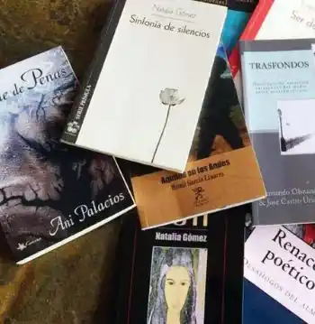

Los libros hoy: vocación editorial y persistencia
Descripción:
Hacer libros, objetos de comercio pero también de culto, es una tarea que involucra muchos talentos y a muchas personas. En la actualidad, sobre todo en este período de pandemia, la industria editorial atraviesa una nueva crisis, una más, sobre la que vale la pena reflexionar y, ante la adversidad, no perder la esperanza.
La vocación editorial siempre ha sido casi suicida; claro, ha habido casos como los de Beatriz de Moura, Jordi Herralde, Joaquín Diez-Canedo (el padre, por supuesto) y tantos otros que, con puntería y empeño, pero sobre todo con visión literaria y comercial, lograron crear sellos que ahora son leyenda: Tusquets, Anagrama, Joaquín Mortiz.
A lo largo de décadas mantuvimos, ellos y muchos de nosotros, convicciones que considerábamos inamovibles: la colocación, la promoción, la distribución, la devolución. Pero todo ha cambiado, no sólo a partir de la Pandemia del Covid-19, sino desde mucho antes, y nos ha costado aceptarlo.
Es importante tomar en cuenta que la actual situación de la industria editorial, no sólo en el país, sino a nivel internacional, es por demás crítica, dado que ni siquiera nuestros puntos naturales de venta, las librerías, está trabajando de manera normal; de hecho, la mayoría de ellas se encuentran cerradas.
El libro nunca ha sido un producto de primera necesidad, es más bien un objeto suntuario, como suelen decir los economistas al uso. Sin embargo, si lo pensamos como instrumento de trabajo para la actualización de un inmenso número de profesionales de todo tipo de disciplinas, entonces se convierte en un factor indispensable para el avance de las ciencias, tanto de las llamadas duras como de las sociales, y no digamos para las artes y las humanidades.
El mercado editorial en América Latina es completamente diferente del de Europa y el de Estados Unidos; mientras en esos países la producción anual puede alcanzar, si no centenas, sí decenas de miles de títulos nuevos, en nuestros países difícilmente llegamos a unas 10 mil novedades por año y en algunos, ni la mitad, lo que nos coloca en abierta desventaja.
Si a esto agregamos que en la actualidad el mercado se encuentra controlado por dos o tres grandes consorcios: Penguin Random House, Planeta, Santillana, etcétera, que dominan la comercialización y, sobre todo, la captación de autores, con base en grandes cheques de adelantos a cuenta de regalías y en ofrecimientos de internacionalización que, por lo regular, no se cumplen, la situación se agudiza.
Así, lo mejor que pueden hacer las editoriales locales, no las autodenominadas “pequeñas” o “independientes”, que por lo regular no son ni una cosa ni la otra, sino maquiladoras al mejor postor, es programar pocos títulos por año, contratar sólo aquellos que consideren que tendrán un buen impacto en ventas y promover, intensamente promover.
La promoción de la lectura no requiere libros de tres pesos que generalmente la gente termina por arrumbar, rematar o simplemente olvidar, y cuya calidad, independientemente del contenido, es por lo general bajísima (¿cómo olvidar esas inefables antologías de poesía o de cuentos siempre radicales, impresas, ¡eso sí!, en papel revolución, plagadas no sólo de erratas, sino de errores garrafales, como atribuir textos de un autor a otro o de equivocar nacionalidades o fechas); se requieren libros acordes con la realidad concreta del sector social al que queramos llegar: campesinos, obreros, desempleados, jóvenes, viejos, mujeres, niños, migrantes nacionales o extranjeros, enfermos, presos.
No se trata sólo de llenar estadísticas y de presumir grandes tirajes para grandes regalos, sino de cubrir necesidades reales de personas reales. No de entelequias ideológicas o religiosas.
No podemos soslayar que el futuro nos ha alcanzado y que muchos nos sentimos rebasados por los avances tecnológicos, pero es indispensable aceptar que el libro digital, nuestra bête noir durante tanto tiempo, ahora es cosa de niños.
Afortunadamente, las profecías de la desaparición del libro en papel nunca se cumplieron y en la actualidad ambos formatos se complementan, es más, siguen siendo bastante más importantes las ventas en papel, que las electrónicas. Hace muchos años, durante mi primera visita a la Feria Internacional del Libro de Frankfurt, los alemanes habían montado una gran exposición dedicada a las nuevas tecnologías. Sorprendentes todas, pero prácticamente no recuerdo más allá de un par.
En efecto, la pandemia del Covid- 19 ha sido nefasta, pero no es el fin de todo; si nuestro mundo se recuperó de la primera y de la segunda guerras mundiales, con los millones de muertos que acarrearon; si sobrevivió a las pandemias de la gripe española, el sida, el ébola y tantas otras; entonces siempre habrá esperanza.
Además, los libros siempre seguirán estando, como han estado desde el origen de los tiempos, en forma de leyendas, tradiciones, papiros, la biblioteca de Alejandría, el calendario azteca, las estelas mayas, los códices prehispánicos; y los incunables y los libros miniados y los libros de horas y los libros y los libros y los libros…
Fecha: Sáb, 15/10/2020 - 13:00